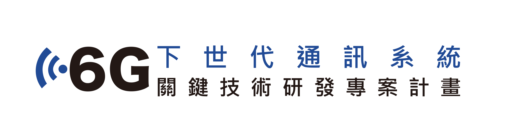
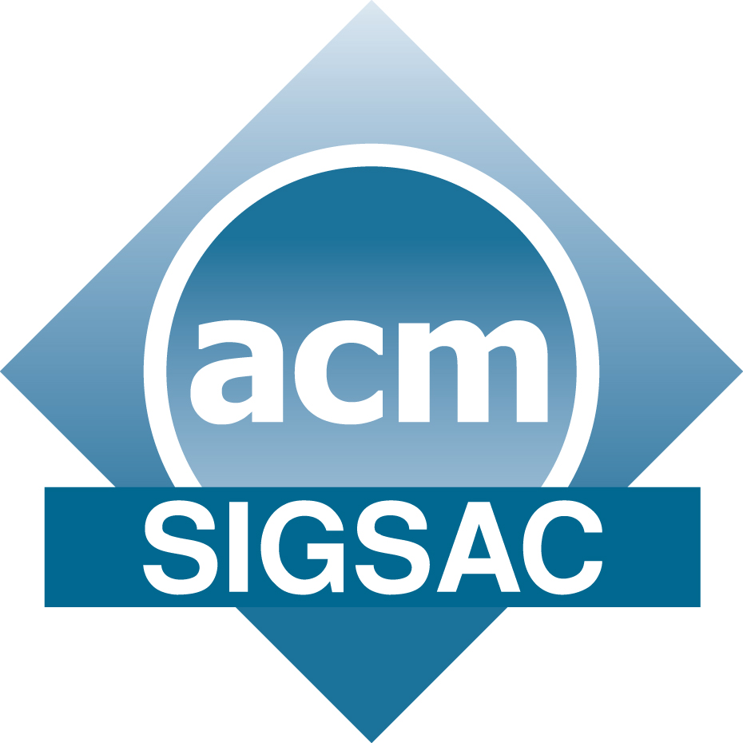

The 2nd free5GC World Forum 2026
Call for Papers
We invite submissions to the 2nd free5GC World Forum. The forum welcomes original, unpublished papers addressing security, network architectures, system innovations, and real-world deployments of 5G/6G core networks, with particular emphasis on research, experimentation, and applications leveraging the free5GC platform.
Submission deadline: September 28, 2026
Keynote
Dr. Yosuke AraganeVice PresidentDeputy Head of IOWN Integrated Innovation CenterNTT
About the Forum
We are pleased to announce the 2nd free5GC World Forum, a premier forum bringing together researchers, industry professionals, open-source developers, and practitioners to explore the latest advances, challenges, and future directions in 5G/6G mobile networks and next-generation networked systems.
The forum focuses on the development, deployment, and evolution of open, programmable, secure, and intelligent mobile network infrastructures, with particular emphasis on 5G core networks, private mobile networks, cloud-native networking, network automation, and emerging AI-native network architectures.
free5GC (https://free5gc.org), a project hosted by the Linux Foundation, is a fully 3GPP-compliant open-source 5G Standalone (SA) core network platform. It provides researchers, developers, educators, and industry partners with a production-quality platform for designing, implementing, evaluating, and deploying next-generation mobile networking technologies. By enabling open experimentation and innovation, free5GC has become a global platform accelerating research, education, standardization, and commercialization in 5G and beyond.
To further support education and workforce development, Linux Foundation Education has launched Introduction to free5GC (LFS114) a free, self-paced online course designed for developers, network engineers, researchers, and technologists seeking hands-on experience with modern 5G Core architecture.
Recent innovations built upon free5GC, such as L25GC+ (https://github.com/nycu-ucr/L25GC-plus), demonstrate how open-source mobile network platforms can enable the exploration of novel architectures, including significant reductions in control-plane latency while maintaining 3GPP compliance. Such efforts highlight the potential of open platforms to advance network performance, programmability, scalability, and security.
The forum provides a unique opportunity for participants to exchange ideas, present innovative research and real-world experiences, and shape the future development of open-source mobile networks and next-generation communication systems.
Topics of Interest
We invite original research papers, technical reports, and case studies in, but not limited to, the following areas:
Mobile Network Architectures and Systems
- 5G Standalone (SA) core networks and next-generation cellular architectures
- Open-source 5G/6G core network platforms, including free5GC development and enhancements
- Low-latency and high-performance mobile core architectures (e.g., L25GC+)
- Network Function Virtualization (NFV), cloud-native networking, and container-based mobile systems
- Network slicing, virtualization, and programmable network infrastructures
- Edge computing, Multi-access Edge Computing (MEC), and distributed mobile systems
- AI-native networking, intelligent orchestration, and automated network management
- 6G visions, architectures, and future mobile core networks
5G/6G Network Security, Privacy, and Trust
- Security and privacy challenges in 5G/6G core networks
- Threat modeling, vulnerability analysis, and attack detection for open-source mobile networks
- Secure network slicing, isolation, and resource management
- Authentication, authorization, identity management, and access control in 5G/6G systems
- Zero-trust architectures for next-generation mobile networks
- AI/ML approaches for security monitoring, anomaly detection, and threat mitigation
- Denial-of-Service (DoS) detection and mitigation in mobile core networks
- End-to-end security and resilience in 5G and beyond
- Post-quantum cryptography and future security mechanisms for mobile networks
- Security and interoperability between 5G/6G and legacy networks
- Digital forensics, incident response, and security operations for mobile infrastructures
Network Performance, Deployment, and Ecosystem Innovation
- Network measurement, performance evaluation, and optimization
- Interoperability, multi-vendor integration, and open networking ecosystems
- Experimental platforms, testbeds, and large-scale mobile network evaluations
- Private cellular networks and industrial 5G deployments
- Multi-operator network scenarios and advanced mobile service architectures
- Real-world deployments, operational experiences, and case studies using free5GC
- Integration of open-source projects and applications with free5GC
- Standardization efforts and industry collaboration for future mobile networks
Submissions will be evaluated based on technical quality, originality, practical impact, and relevance to next-generation mobile and networked systems. We particularly encourage contributions demonstrating innovative architectures, experimental results, open-source implementations, security analysis, performance improvements, or practical deployment experiences using free5GC and related platforms.
Submission Guidelines
- Submitted papers must not substantially overlap papers that have been published or that are simultaneously submitted to a journal or a conference with proceedings.
- Long papers: Maximum 12 pages for review, with the final camera-ready version limited to 9 pages. Submissions should be no more than 12 pages in the ACM double-column format, excluding the bibliography and well-marked appendix. Committee members are not required to read the appendices, so the paper should be understandable without them. For accepted papers, the final camera-ready version may be limited to 9 pages, including the bibliography, appendix, and all content.
- Short papers: 4 pages for both review and final camera-ready submission. The forum also welcomes short submissions of up to 4 pages for preliminary results or concise contributions that can be clearly described in a few pages.
- Authors of long-paper submissions may indicate in a footnote on the first page if they would like their paper to also be considered for publication as a short paper (4 pages in the proceedings).
- Submissions must be PDF files in the ACM double-column format (https://www.acm.org/publications/proceedings-template) using the “sigconf” template. Authors should not modify the font or margins of the ACM format. The CCS information such as concepts, keywords, or rights management data (e.g., DOI, ISBN) must be included. A teaser figure is optional. Please refer to sample-sigconf.tex and sample-sigconf.pdf in the ACM LaTeX package (https://www.overleaf.com/latex/templates/association-for-computing-machinery-acm-sig-proceedings-template/bmvfhcdnxfty) for formatting examples. Submissions not following the required format may be rejected without review.
- Submissions should not be anonymized.
- Submissions should be made through the HotCRP submission website (https://free5gc-2026.hotcrp.com/). Only PDF files will be accepted. Submissions that do not comply with these guidelines may be rejected without review.
- Accepted papers, including both long and short papers, will be included in the conference proceedings, which will be published in the ACM Digital Library.
- Authors of accepted papers must ensure that at least one author presents the paper at the forum. Otherwise, the paper will be excluded from the conference proceedings.
Note
Authors of accepted papers are required to ensure that their papers are presented at the forum.
Important note to authors about ACM's new open access publishing model
ACM has given International Conference Proceedings Series (ICPS) conferences the option to cover article processing charges (APCs) for papers published in their proceedings by way of a single payment. The free5GC '26 conference committee has chosen this option, and all papers will therefore be published open access at no cost to authors.
Important Dates
Paper Submission Deadline
September 28, 2026
Notification of Acceptance
October 28, 2026
Camera-Ready Papers Due
November 10, 2026
Forum Date
December 17-18, 2026
Venue
The 2nd free5GC World Forum will take place at National Yang Ming Chiao Tung University (NYCU) in Hsinchu, Taiwan, providing opportunities for in-depth discussions and collaboration on 5G core networks.
Organizing Committee
General Chairs
Jyh-Cheng Chen
National Yang Ming Chiao Tung University (NYCU)
K. K. Ramakrishnan
University of California, Riverside
General Vice Chair
Chi-Yu Li
National Yang Ming Chiao Tung University (NYCU)
International Advisory Committee
Falko Dressler
TU Berlin
Tommaso Melodia
Northeastern University
Akihiro Nakao
The University of Tokyo
Shivendra Panwar
Tandon School of Engineering of New York University
Ashutosh Sabharwal
Rice University
Technical Program Committee Chair
Chien Chen
National Yang Ming Chiao Tung University (NYCU)
Publicity Chairs
Chi-Yu Li
National Yang Ming Chiao Tung University (NYCU)
Shixiong Qi
Southeast University
Web Chair
Feng Tu
Saviah Technologies, Inc.
Program Committee Members
Chien Chen, National Yang Ming Chiao Tung University (NYCU)
Nakjung Choi, Nokia Bell Labs
Chun-Ying Huang, National Yang Ming Chiao Tung University (NYCU)
Koushik Kar, Rensselaer Polytechnic Institute
Yuki Koizumi, Osaka University
Xinyu Lei, Michigan Technological University
Chi-Yu Li, National Yang Ming Chiao Tung University (NYCU)
Fuchun Joseph Lin, National Yang Ming Chiao Tung University (NYCU)
Phone Lin, National Taiwan University
Ai-Chun Pang, National Taiwan University
Chunyi Peng, Purdue University
Shixiong Qi, Southeast University
Edwin Ren, University of East Anglia
Yuji Sekiya, The University of Tokyo
Junji Takemasa, Osaka University
Chee Wei Tan, Nanyang Technological University
Zhaowei Tan, University of California, Riverside
Chien-Chao Tseng, National Yang Ming Chiao Tung University (NYCU)
Feng Tu, Saviah Technologies, Inc.
Guan-Hua Tu, Michigan State University
Hiroki Watanabe, SoftBank Corp.
Kang Wei, Southeast University
Wenting Wei, Xidian University
Yang Xiao, University of Kentucky
Tian Xie, Utah State University
Xiaochan Xue, University of Hawaii at Manoa
Li-Hsing Yen, National Yang Ming Chiao Tung University (NYCU)
Antonia Zhai, University of Minnesota
Zhi-Li Zhang, University of Minnesota
Organizers
Organizer
Communication Service/Software Laboratory, National Yang Ming Chiao Tung University (NYCU)
Co-organizers

Program for Key Technologies Research on Next Generation Communication Systems, National Science and Technology Council (NSTC)
Program for 6G Advanced Research, National Science and Technology Council (NSTC)
In-Cooperation

© 2026 free5GC World Forum. All rights reserved.